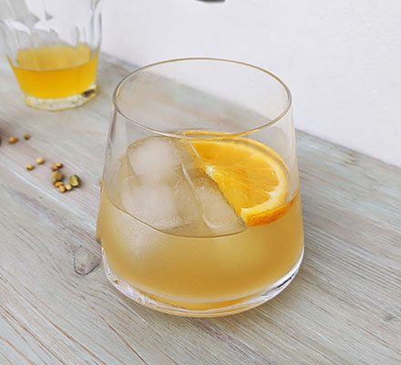

Negroni Mocktail

Make an alcohol-free version of the classic negroni cocktail, with grape juice and a syrup made from grapefruit, coriander and cardamon pods
Ingredients
Syrup base
- ½ grapefruit (approx 125g)
- 1 slice orange
- 125g caster sugar
- 3 cardamom pods, lightly crushed
- pinch coriander seeds
- few drops red food colouring
Cocktail
- ice
- 25ml white grape juice
- 1 slice orange
Steps
Syrup
- Chop the grapefruit in small chunks
- Put the grapefruit chunks, the orange slice, sugar, 125ml water, chardamom pods and coriander seeds in a saucepan
- Heat the mixture until simmering and cook for around 5 mins, crushing the fruit pieces as it starts to soften to release the juices
- Once the fruit has softened and the white pith has faded, take it off the heat
- Leave to cool
- Add a splash of red food colouring to the syrup (optional)
Cocktail
- Strain the syrup
- Fill a tumbler with ice, 25ml syrup, 25ml cold water and the grape juice
- Stir gently until the outside of the tumbler feels cold
- Garnish with a slice of orange
Back